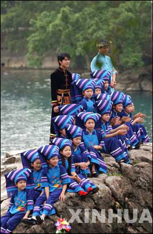

“三月三”歌圩
壮族是中国少数民族中人口最多的一个民族，主要聚居在广西、云南省文山，广东连山、贵州从江、湖南江华等地也有分布。人口1900多万，2007年末，广西约有壮族1650万人，约占全区总人口的33％，占全国壮族人口的90％以上。
壮语属汉藏语系壮侗语族壮傣语支，分南北两大方言。南宋时，曾在汉字的基础上创造出“土俗字”，但使用范围不广，多使用汉字。1955 年创制了以拉丁字母为基础的壮文。1957年11月，由周恩来总理亲自主持召开的政务院第63次全体会议批准了《壮文方案》，结束了壮族人民没有自己合法文字的历史。
在集中本民族民间文学、音乐、舞蹈、技艺的基础上，壮族人民创造了壮戏。铜鼓是壮族最有代表性的民间乐器。
壮族在宋代史籍中称为“撞”、“僮”、“（彳+童）”。解放后称“僮”。1965年10月12日，经广西僮族自治区人民委员会报请国务院批准，改族名为“壮族”。壮族人民曾多次发动反封建、反压迫的农民起义，广西桂平金田村是太平天国的发生地。1929年12月到1932年，在广西建立的左右江革命根据地为中国革命作出贡献。
壮族人忌讳农历正月初一这天杀牲；有的地区的青年妇女忌食牛肉和狗肉；妇女生孩子的头三天（有的是头七天）忌讳外人入内；忌讳生孩子尚未满月的妇女到家里串门。
壮族以农业为主，驰名中外的三七、蛤蚧和茴油是壮族地区素负盛名的特产。甘蔗产量居全国首位。
壮族信仰原始宗教，祭祀祖先，部分人信仰天主教和基督教。著名节日有一年一度的“三月三”歌节等。>>
客人到家，必在力所能及的情况下给客人以最好的食宿，对客人中的长者和新客尤其热情。用餐时须等最年长的老人入席后才能开饭；长辈未动的菜，晚辈不得先吃；给长辈和客人端茶、盛饭，必须双手捧给，而且不能从客人面前递，也不能从背后递给长辈；先吃完的要逐个对长辈、客人说“慢吃”再离席；晚辈不能落在全桌人之后吃饭。路遇老人，男的要称“公公”，女的则称“奶奶”或老太太；路遇客人或负重者，要主动让路，若遇负重的长者同行，要主动帮助其代负并送到分手处。
解放后，1952年12月9日在广西的西半部建立桂西壮族自治区，1956年春改为自治州。1958年3月5日建立以原广西省地区为范围的广西壮族自治区。1958年4月1日建立云南文山壮族苗族自治州，1962年9月26日建立广东连山壮族瑶族自治县。
日常食俗 多数地区的壮族习惯于日食三餐，有少数地区的壮族也吃四餐，即在中、晚餐之间加一小餐。早、中餐比较简单，一般吃稀饭，晚餐为正餐，多吃干饭，菜肴也较为丰富。大米、玉米是壮族地区盛产的粮食，自然成为他们的主食。制作方法多种多样，比如大米有籼米、粳米、糯米等品种。平时用于做饭、煮粥，也常蒸成米粉（类似面条，有汤食、炒食之分）食用，味道鲜美可口。粳米、糯米还可泡成甜米酒即醪糟（方法与汉族同）。营养丰富，在冬天常吃，能起御寒滋补作用。糯米常用做糍粑、粽子、五色糯米饭等，是壮族节庆的必备食品。玉米也有机玉米与糯玉米之别，机玉米用于熬粥，有时也煎成玉米饼。玉米粥乃山里壮族人最常吃的。有些地方还有吃南瓜粥的习惯，即先将瓜熬烂，加玉米面煮熟即可。糯玉米磨成面后，可做糯玉米粑，或捏成鸡蛋大小的面团（内可包有糖、芝麻、花生等馅料），再用水煮熟，与其清汤同吃，相当于汉族元宵、色味俱美。甜食是壮族食俗中的又一特色。糍粑、五色饭、水晶包（一种以肥肉丁加白糖为馅的包子）等均要用糖，连玉米粥也往往加上糖。日常蔬菜有青菜、瓜苗、瓜叶、京白菜（大白菜）、小白菜、油菜、芥菜、生菜、芹菜、菠菜、芥蓝、蕹菜、萝卜、苦麻菜，甚至豆叶、红薯叶、南瓜苗、南瓜花、豌豆苗也可以为菜。以水煮最为常见，也有腌菜的习惯，腌成酸菜、酸笋、咸萝卜、大头菜等。快出锅时加入猪油、食盐、葱花。壮族对任何禽畜肉都不禁吃，如猪肉、牛肉、羊肉、鸡、鸭、鹅等，有些地区还酷爱吃狗肉。猪肉也是整块先煮，后切成一手见方肉块，回锅加调料即成。壮族人习惯将新鲜的鸡、鸭、鱼和蔬菜制成七八成熟，菜在热锅中稍煸炒后即出锅，可以保持菜的鲜味。壮族自家还酿制米酒、红薯酒和木薯酒，度数都不太高，其中米酒是过节和待客的主要饮料，有的在米酒中配以鸡胆称为鸡胆酒，配以鸡杂称为鸡杂酒，配以猪肝称为猪肝酒。饮鸡杂酒和猪肝酒时要一饮而尽，留在嘴里的鸡杂、猪肝则慢慢咀嚼，既可解酒，又可当菜。
节庆、礼仪食俗 壮族最隆重的节日莫过于春节，其次是七月十五中元鬼节、三月三、清明上坟、八月十五中秋，还有端午、重阳、尝新、冬至、牛魂、送灶等等，几乎每个月都要过节。过春节一般在腊月二十三过送灶节后便开始着手准备，要把房子打扫得窗明几净，二十七宰年猪，二十八包粽子，二十九做糍粑。除夕晚，在丰盛的菜肴中最富特色的是整煮的大公鸡，家家必有。壮族人认为，没有鸡不算过年。年初一喝糯米甜酒、吃汤圆（一种不带馅的元宵，煮时水里放糖），初二以后方能走亲访友，相互拜年，互赠的食品中有糍粑、粽子、米花糖等，一直延续到十五元宵，有些地方甚至到正月三十，整个春节才算结束。三月三按过去的习俗为上坟扫墓的日子，届时家家户户都要派人携带五色糯米饭、彩蛋等到先祖坟头去祭祀、清扫墓地，并由长者宣讲祖传家史、族规，共进野餐。还有的对唱山歌，热闹非凡。1940年后，这一传统已逐步发展到有组织的赛歌会，气氛更加隆重、热烈。其他节日食俗也都各有讲究，各具特色，比如中元吃鸭、端午吃粽、重阳吃粑等等。壮族的粽子分为包米粽（用浸泡后的糯米包扎）和包糕粽（经浸好的糯米水磨成浆和过滤成“糕”后再包扎。“包菜”也称“包生饭”，是三月三、四月八（牛魂节）许多壮族地区人们爱吃的节日食品。其方法新鲜别致，即用“包生菜”的宽嫩叶包上一小口饭，放入口中嚼吃。颇有独特风味。
壮族是个好客的民族，过去到壮族村寨任何一家作客的客人都被认为是全寨的客人，往往几家轮流请吃饭，有时一餐饭吃五、六家。不管远亲近邻来家做客，都要以礼相迎，热情接待。平时即有相互做客的习惯，比如一家杀猪，必定请全村各户每家来一人，共吃一餐。招待客人的餐桌上务必备酒，方显隆重。敬酒的习俗为“喝交杯”，其实并不用杯，而是用白瓷汤匙。两人从酒碗中各舀一匙，相互交饮，眼睛真诚地望着对方。婚丧嫁娶、盖房造屋，以及小孩满月、周岁等红白喜事，都要置席痛饮。一般要有扣肉、米粉肉、清煮白肉块、猪肝、白斩鸡、烤乳猪、豆腐圆、油炸蓉（用油豆腐加工而成）、笋片、鱼生等8或10道菜。实行男女分席，但一般不排座次，不论辈分大小，均可同桌。并且按规矩，即便是吃奶的婴儿，凡入席即算一座，有其一份菜，由家长代为收存，用干净的阔叶片包好带回家，意为平等相待。每次夹菜，都由一席之主先夹最好的送到客人碗碟里，然后其他人才能下筷。壮族丧葬酒席多为素菜，只有出殡以后才能吃荤。
祭祀食俗 壮族过去信仰多神，崇拜自然，认为万物有灵，如果村寨中有一棵参天大树，往往被视为全村的保护神而加以崇拜，谁家有人病重必定要到树前烧香焚纸，祈求保佑；村后有个悬崖龙洞也被认为是显灵圣地或鬼神栖息之所，而常去焚香超度，祭鬼消灾。更多的是祭土地神，壮族地区几乎每个村寨都在离村不远的山脚下立一土地庙，每逢过节或是平时杀猪，都要以整煮猪头去那里超度一番，若做烤猪则抬着整猪前去敬祭。家神更是每节必祭，摆上酒、肉、整鸡等供品，祭罢方能食用。一年之中最大的祭祀活动是农历七月十五日的中元节。过中元节时，家家都要杀鸡宰鸭，蒸五色糯米饭，祭祖、祭鬼神，以求免除灾祸。牛魂节祭牛魂，多在春耕以后的一天，有的地方固定于农历四月初八进行。这天，各家都带着一篮五色糯米饭和一束鲜草，到牛栏旁祭牛魂，然后把一半食品及鲜草给耕牛吃。过去，桂西南一带壮族要在霜降节杀鸡宰鹅，做糍粑，蒸糯米饭，聚集在玉音庙宇供祭。相传霜降节是纪念反抗外来侵略的英雄的节日，已有360多年的历史。
典型食品 壮族有许多著名的菜肴和小吃：马脚杆，云南文山地区壮族特有食品，用糯米加腊肉丝及其他调料制作而成，形壮如马脚得名；鱼生，过去是壮族节日或待客的上肴；烤乳猪，壮族名菜，用小猪烤制而成；五色糯米饭，也称花糯米饭、五彩糯米饭，用优质糯米和各种植物色素或食用色素蒸制而成，是壮（瑶）族传统节令食品，已有数百年的历史，每逢节日，亲朋之间都要相互赠送五色糯米饭，以表示盛情和敬意，祝福吉祥如意，愉快幸福, 成品并具有清热解毒、健胃强身的功效；宁明壮粽，壮族春节特制传统食品，是用糯米、猪肉等煮制成的一种大粽粑，以广西宁明一带的粽粑最具特色，故名，居住在广西西靖西岳圩、湖润一带的壮族，每逢春节也有吃这种大粽粑之习，当地称“风莫饭”。相传吃风莫饭之习，始于北宋，常在春节前几天开始制作。做好的宁明壮粽年初一时用以祭祀祖先；状元柴把，用卤熟的鸭肉等经韭菜捆扎而成。白切狗肉，广西壮族名菜，用狗肉煮熟拌以佐料而成，朋友聚会，有时仅凭此一菜猜拳叙饮，故有戏称：“独脚菜”（壮族有吃狗肉的习惯）；壮家酥鸡，广西中部地区壮族传统名菜，以鸡为主要原料，经炸后再加工而成，是壮家逢年过节常备菜式，已有一百多年历史；清炖破脸狗，云南壮族传统名菜，用破脸狗肉放入砂锅内隔水炖熟而成。（破脸狗：又名围子、花白脸，全身毛以黑白两色组成，头部黑白纹路突出，故名破脸狗，属山中小野兽）；⑩龙泵三夹，广西西北部地区壮族传统名菜，壮族有用猪小肠酿进猪血制成的食品称“猪龙泵”；用猪龙泵配上猪肝、猪粉肠制成冷盆菜，食用时各拈一块共三件，夹在一起吃，因而得名。已有300多年历史，是当地办喜庆筵宴的压席菜。此外还有豆腐肴，广西河池地区壮族流行菜，也是仫佬族、毛南族的风味菜。